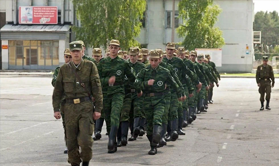
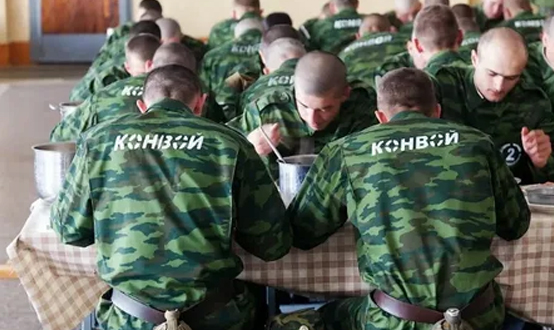

Среди уголовных наказаний, предусмотренных ст. 44 УК РФ, можно выделить группу специальных воинских видов наказаний, которые адресованы военнослужащим, признанным виновными в совершении преступлений. К таковым относят лишение специального, воинского или почетного звания, классного чина и государственных наград (ст. 48 УК РФ), ограничение по военной службе (ст. 51 УК РФ), содержание в дисциплинарной воинской части (ст. 55 УК РФ), а также арест с отбыванием на гауптвахте (ч. 3 ст. 54 УК РФ).
Суть этих наказаний состоит в изъятиях и ограничениях прав и свобод военнослужащих в специфических условиях прохождения военной службы (арест с отбыванием на гауптвахте, содержание в дисциплинарной воинской части, ограничение по военной службе) или в полном лишении статуса военнослужащего с потерей связанных с ним привилегий (лишение воинского звания). В зависимости от срока указанные уголовные наказания уместно также разделить на срочные (содержание в дисциплинарной воинской части, арест с отбытием на гауптвахте, ограничение по военной службе) и бессрочные (лишение воинского звания).
Лишение специального, воинского или почетного звания, классного чина и государственных наград
Данное наказание применимо как к военнослужащим (имеющим воинские звания), так и к гражданским служащим (имеющим классные чины) и сотрудникам правоохранительных органов (имеющим специальные звания).
Все три указанных категории государственных служащих, а также рядовые граждане в определенных ситуациях, имеют право на получение государственных наград и, соответственно, подлежат их лишению в установленных законом случаях. Государственными наградами РФ являются звание Героя РФ, ордена (например, орден «За заслугу перед Отечеством»), медалями (например, «За отвагу»), знаки отличия РФ, почетные звания РФ.
Лишение званий, классных чинов и государственных наград возможно лишь за совершение тяжкого или особо тяжкого преступления с учетом личности виновного и только судом. В случае лишения военнослужащего воинского звания он подлежит безусловному увольнению с военной службы, аналогично с обладателями специальных званий и классных чинов. Лишение государственных наград само по себе не связано с профессиональным статусом лица, однако приводит к лишению привилегий, предоставленных обладателям таких наград (например, пожизненных пенсий).
Лишение специального, воинского или почетного звания, классного чина и государственных наград может назначаться только в качестве дополнительного наказания (основным, как правило, выступает лишение свободы на определенный срок). Основное возможное наказание должно быть свыше пяти лет лишения свободы, т. е. за совершение тяжкого или особо тяжкого преступления. Данное наказание бессрочно: звание, чин и награды не возвращаются после отбытия основного наказания либо после погашения или снятия судимости.
Исследователи указывают на целесообразность дополнения данного вида наказания еще одной, менее строгой его разновидностью — понижением в воинском звании. Эта мера означала бы не полное лишение статуса военнослужащего с утратой соответствующих привилегий, а сокращение таких привилегий в силу понижения в звании. Данная мера могла бы применяться за совершение военнослужащими преступлений небольшой и средней тяжести и назначаться в качестве дополнительного вида наказания к основным воинским видам наказания.
Ограничение по военной службе
Данный вид уголовного наказания применяется только к военнослужащим, проходящим военную службу по контракту, на срок от трех месяцев до двух лет за совершение преступлений против военной службы, а также вместо исправительных работ.
Суть наказания состоит в удержании из денежного довольствия осужденного определенной доли (не более 20%) в доход государства.
Во время отбывания этого наказания осужденный не может быть повышен в должности, воинском звании, а срок наказания не засчитывается в срок выслуги лет для присвоения очередного воинского звания.
Закрепленное в УК РФ положение о том, что ограничение по военной службе применительно к военнослужащим является альтернативой уголовному наказанию в виде исправительных работ, по мнению специалистов, имеет ряд недостатков. Так, у указанных видов наказаний разные сроки: при исправительных работах - от двух месяцев до двух лет, а при ограничении по военной службе - от трех месяцев до двух лет. Размеры денежных удержаний, применяемых в рамках данных наказаний, также различаются: при исправительных работах - от 5 до 20 %, при ограничении по военной службе - до 20 %. Очевидно, что такой подход создает трудности при назначении одного из этих наказаний вместо другого и ставит в неравное положение осужденных военнослужащих и гражданских лиц.
Содержание в дисциплинарной воинской части
Данное наказание применяется только к военнослужащим, проходящим военную службу по призыву, а также к военнослужащим, проходящим военную службу по контракту на должностях рядового и сержантского состава, если они на момент вынесения судом приговора не отслужили установленного законом срока службы по призыву.
Военнослужащие, осужденные к содержанию в дисциплинарной воинской части, отбывают наказание в отдельных дисциплинарных батальонах или отдельных дисциплинарных ротах.
В дисциплинарной воинской части устанавливается порядок исполнения и отбывания наказания, обеспечивающий: исправление осужденных военнослужащих; воспитание у них воинской дисциплины, сознательного отношения к военной службе; исполнение возложенных на них воинских обязанностей и требований по военной подготовке; реализацию их прав и законных интересов; охрану осужденных военнослужащих и надзор за ними; личную безопасность осужденных и персонала воинской части. Срок наказания — от трех месяцев до двух лет. за совершение преступлений против военной службы.
Основанием применения является совершение преступлений против военной службы (гл. 33 УК РФ), а также случаи, когда характер преступления и личность виновного свидетельствуют о возможности замены лишения свободы на срок не свыше двух лет содержанием осужденного в дисциплинарной воинской части на тот же срок. В таком случае, отмечают исследователи, возникает несоответствие нижних пределов данных наказаний: применительно к лишению свободы - это 2 месяца, а к содержанию в дисциплинарной воинской части - 3 месяца. В законе целесообразно снизить нижний предел общего срока содержания в дисциплинарной воинской части до двух месяцев.
При содержании в дисциплинарной воинской части вместо лишения свободы срок содержания в дисциплинарной воинской части определяется из расчета один день лишения свободы за один день содержания в дисциплинарной воинской части.
Отдельно отметим такой вид наказания, как арест с отбыванием на гауптвахте — он не выделяется в качестве самостоятельного вида уголовных наказаний, а является специальной формой ареста, предназначенной исключительно для военнослужащих. Ранее арест с отбыванием на гауптвахте рассматривался как альтернатива исправительным работам для военнослужащего в случае злостного уклонения от их отбывания. Однако в дальнейшем такой альтернативой было объявлено ограничение по военной службе.
Гауптвахта — это специальное помещение камерного типа, в котором осужденные к аресту пребывают в течение всех суток. При этом наказание включает не только изоляцию от общества на определенный срок, но и проведение ежедневных занятия по строевой подготовке и изучению общевоинских уставов. Арест с отбыванием на гауптвахте предусмотрен за преступления небольшой и средней тяжести, но не может быть назначен военнослужащему условно. Срок пребывания под арестом не включается в общий срок службы.